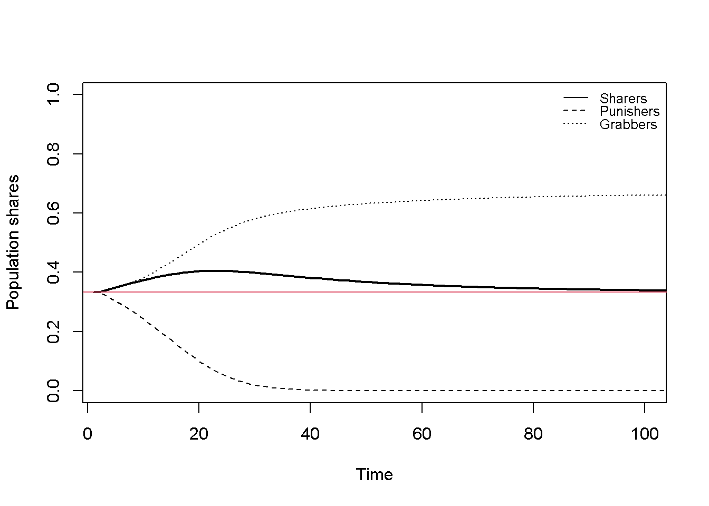
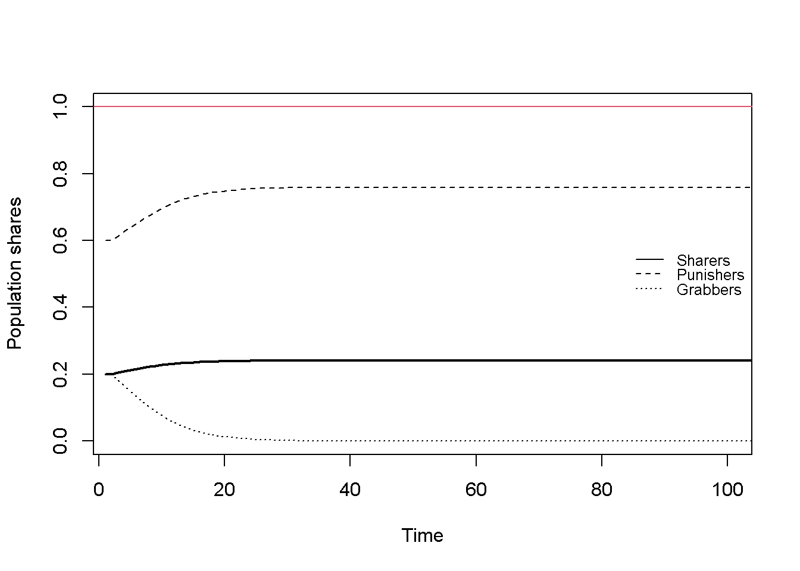
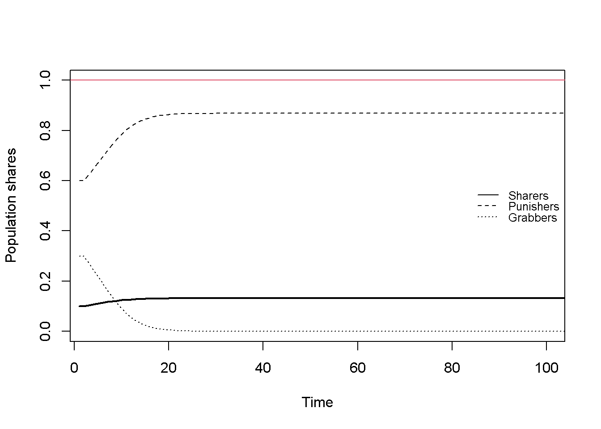

#Clear the environment
rm(list=ls(all=TRUE))
#Set number of periods
Q = 1000
# time increment
d=0.1
# Set number of initialisations
S=3
# Set constant parameter values
v=2 # value of good to be divided
c=3 # cost of defeat
#Create (S x Q) matrices in which equilibrium solutions from different initialisations will be stored
pi_S=matrix(data=0.5, nrow=S, ncol=Q) # payoffs for Sharers
pi_P=matrix(data=0.5, nrow=S, ncol=Q) # payoffs for Punishers
pi_G=matrix(data=0.5, nrow=S, ncol=Q) # payoffs for Grabber
pi_bar=matrix(data=0.5, nrow=S, ncol=Q) # average payoffs
alpha=matrix(data=0, nrow=S, ncol=Q) # population frequency of Sharers
beta=matrix(data=0, nrow=S, ncol=Q) # population frequency of Punishers
gamma=matrix(data=0, nrow=S, ncol=Q) # population frequency of Grabbers
### Initialise population shares
# Hobbesian equilibrium
alpha[1, 1]=1/3
beta[1, 1]=1/3
gamma[1, 1]=1- alpha[1, 1] - beta[1, 1]
# Rousseauian equilibrium #1
alpha[2, 1]=0.2
beta[2, 1]=0.6
gamma[2, 1]=1- alpha[2, 1] - beta[2, 1]
# Rousseauian equilibrium #2
alpha[3, 1]=0.1
beta[3, 1]=0.6
gamma[3, 1]=1- alpha[3, 1] - beta[3, 1]
# Simulate the model by looping over Q time periods for S different initialisations
for (i in 1:S){
for (t in 2:Q){
# Population share of Sharers
alpha[i,t] = alpha[i,t-1] + alpha[i,t-1]*(pi_S[i,t-1] - pi_bar[i,t-1])*d
# Population share of Punishers
beta[i,t] = beta[i,t-1] + beta[i,t-1]*(pi_P[i,t-1] - pi_bar[i,t-1])*d
# Population share of Grabbers
gamma[i,t]=1- alpha[i, t] - beta[i, t]
# Payoffs of Sharers
pi_S[i,t] = 0.5*v*(alpha[i,t] + beta[i,t])
# Payoffs of Punishers
pi_P[i,t] = 0.5*v*(alpha[i,t] + beta[i,t]) + (1-alpha[i,t]-beta[i,t])*(beta[i,t]*v-(1-beta[i,t])*c)
# Payoffs of Grabbers
pi_G[i,t] = alpha[i,t]*v + beta[i,t]*((1-beta[i,t])*v-beta[i,t]*c) + (1-alpha[i,t]-beta[i,t])*0.5*(v-c)
# Average payoffs
pi_bar[i,t] = alpha[i,t]*pi_S[i,t] + beta[i,t]*pi_P[i,t] + (1-alpha[i,t]-beta[i,t])*pi_G[i,t]
} # close time loop
} # close scenarios loop19 An Evolutionary Game Theoretic Model of the Emergence of Property Rights
Overview
Evolutionary game theory (EGT) has its origins in evolutionary biology, where it was developed to study how behavioural strategies evolve within populations. It combines concepts from game theory, such as strategic interactions and their resulting payoffs, with Darwinian evolutionary biology, in particular the idea of differential replication (selection). Populations are assumed to consist of repeatedly interacting agents that follow different strategies with different payoffs. More successful strategies will reproduce faster, thereby increasing their frequencies in the population. EGT studies different strategies, their performance, and the possible equilibria that may emerge over time, which can involve the extinction, dominance, or co-existence of various strategies.1 Unlike classical game theory which typically assumes agents to be fully rational, EGT assumes agents to follow simple rules whose relative success is not known to the agents in advance.
In this section, we present a continuous-time model from Bowles (2004), chapter 11, which seeks to illuminate the logic behind the emergence of property rights.2 It asks how social norms that ensure the enforcement of property rights could evolve through the repeated interaction of agents. The model features three types of strategies: sharing, grabbing, and punishing. For property rights to be respected, the grabbing strategy needs to be contained through sufficiently pervasive punishing. A particularly interesting feature of the model, both from an economic and a technical perspective, is that its outcomes depend on initial conditions. The model thus captures a form of path dependence, where a historically given distribution of behavioural rules impacts not only the subsequent trajectory, but also the long-run equilibrium that will emerge.3
The strategies and their payoffs
There are \(n\) members of a population that are paired randomly to divide a good whose value is \(v\). They can adopt one of three strategies: sharing, grabbing, or punishing. When Sharers meet, they divide the good equally. When Grabbers meet Sharers, they grab the good from the Sharers. When Grabbers meet other Grabbers, they fight and win or bear the costs of defeat \(c > v\) with equal probability. Punishers meeting Sharers or other Punishers divide the good equally. When Punishers meets Grabbers, they attempt to punish the Grabbers collectively. If successful, an individual Punisher will distribute the good equally among all Punishers, otherwise it bears the cost of defeat \(c\). Because punishing is a collective strategy, its probability of success depends on the population frequency of Punishers. For simplicity, it is assumed that the probability of success is equal to the population frequency of Punishers, \(\beta\). With these assumptions, the payoffs of the different interactions are given in Table 1.
Table 1: Payoffs (for individual row players)
| Share | Grab | Punish | |
|---|---|---|---|
| Share | v/2 | 0 | v/2 |
| Grab | v | (v - c)/2 | (1 - \(\beta\))v - \(\beta\)c |
| Punish | v/2 | v/n - (1 - \(\beta\))c | v/2 |
The model
The model equations are: \[ \pi^S_{t}=0.5v(\alpha_t + \beta_t) \tag{19.1}\]
\[ \pi^P_{t} = 0.5v(\alpha_t + \beta_t) + (1-\alpha_t -\beta_t)[\beta_t v - (1-\beta_t)c)] \tag{19.2}\]
\[ \pi^G_{t} = \alpha_t v + \beta_t[(1-\beta_t)v-\beta_t c] + 0.5(1-\alpha_t -\beta_t)(v-c) \tag{19.3}\]
\[ \dot{\alpha}=\alpha_t( \pi^S_{t} - \bar{\pi}) \tag{19.4}\]
\[ \dot{\beta}=\beta_t( \pi^G_{t} - \bar{\pi}) \tag{19.5}\]
\[ \bar{\pi}_t=\alpha_t \pi^S_{t} + \beta_t \pi^P_{t} +\gamma_t \pi^G_{t} \tag{19.6}\]
\[ \gamma_t=1-\alpha_t -\beta_t \tag{19.7}\]
where \(\pi^S_{t}\), \(\pi^P_{t}\), and \(\pi^G_{t}\) represent the expected payoffs of Sharers, Punishers, and Grabbers, and \(\alpha\), \(\beta\), and \(\gamma\) are their respective population frequencies. \(\bar{\pi}\) is the (weighted) average payoff. \(v\) and \(c\) are the value of the good to be divided and the cost of losing a fight, respectively. A dot over a variable represents the derivative with respect to time (\(\dot{x}=\frac{d x}{d t}\)).
Equation 19.1 - Equation 19.3 specify the expected payoffs associated with the three strategies. These follow from the payoffs from the different possible pairings reported in Table 1 together with the population frequencies, which constitute the probabilities of being randomly paired with a player of the respective strategy. To find the expected payoff for Punishers, consider what happens in interactions with Grabbers. The value in Table 1, v/n - (1 - \(\beta\))c, represents the payoff for an individual Punisher in an interaction with a Grabber. However, in every period, there are \(\beta n - 1\) other Punishers, of which \((\beta n - 1)(1-\alpha-\beta)\) will also be paired with Grabbers. Each Punisher will receive \(v/\beta n\) from each of these, yielding an expected amount \((\beta n - 1)(1-\alpha-\beta)(v/n)\) from redistribution. Adding this expected redistributed payoff to the expected direct payoffs in Table 1 yields the total payoff for Punishers in Equation 19.2.
Equation 19.4 - Equation 19.5 specify the change in population frequencies of Sharers and Punishers. These so-called replicator equations are a key feature of EGT. They encapsulate the idea of selection based on relative fitness: strategies that yield above-average payoffs (as defined in Equation 19.6) increase their presence in the population. While in biological applications, strategies are typically conceived as genetically inherited and replication as sexual reproduction, in social applications, replication may occur through a cultural transmission process and/or adaptive learning.
With the population dynamics of Sharers and Punishers determined, the frequency of Grabbers follows residually (Equation 19.7).
Simulation
Parameterisation
Table 2 reports the initialisations used in the simulations. We will keep the parameters \(v\) and \(c\) fixed and study how different initialisations of the population shares give rise to different equilibria, whose interpretation (‘Hobbesian’ vs ‘Rousseauian’) will be discussed below.
Table 2: Initialisations
| Initialisations | \(v\) | \(c\) | \(\alpha_0\) | \(\beta_0\) | \(\gamma_0\) |
|---|---|---|---|---|---|
| 1: Hobbesian equilibrium | 2 | 3 | 1/3 | 1/3 | 1/3 |
| 2: Rousseauian equilibrium #1 | 2 | 3 | 0.2 | 0.6 | 0.2 |
| 2: Rousseauian equilibrium #2 | 2 | 3 | 0.1 | 0.6 | 0.3 |
Simulation code
Python code
import numpy as np
# Set number of periods
Q = 1000
# Time increment
d = 0.1
# Set number of initialisations
S = 3
# Set constant parameter values
v = 2 # value of good to be divided
c = 3 # cost of defeat
# Create (S x Q) matrices in which equilibrium solutions from different initialisations will be stored
pi_S = np.full((S, Q), 0.5) # payoffs for Sharers
pi_P = np.full((S, Q), 0.5) # payoffs for Punishers
pi_G = np.full((S, Q), 0.5) # payoffs for Grabbers
pi_bar = np.full((S, Q), 0.5) # average payoffs
alpha = np.zeros((S, Q)) # population frequency of Sharers
beta = np.zeros((S, Q)) # population frequency of Punishers
gamma = np.zeros((S, Q)) # population frequency of Grabbers
### Initialise population shares
# Hobbesian equilibrium
alpha[0, 0] = 1/3
beta[0, 0] = 1/3
gamma[0, 0] = 1 - alpha[0, 0] - beta[0, 0]
# Rousseauian equilibrium #1
alpha[1, 0] = 0.2
beta[1, 0] = 0.6
gamma[1, 0] = 1 - alpha[1, 0] - beta[1, 0]
# Rousseauian equilibrium #2
alpha[2, 0] = 0.1
beta[2, 0] = 0.6
gamma[2, 0] = 1 - alpha[2, 0] - beta[2, 0]
# Simulate the model by looping over Q time periods for S different initializations
for i in range(S):
for t in range(1, Q):
# Population share of Sharers
alpha[i, t] = alpha[i, t-1] + alpha[i, t-1] * (pi_S[i, t-1] - pi_bar[i, t-1]) * d
# Population share of Punishers
beta[i, t] = beta[i, t-1] + beta[i, t-1] * (pi_P[i, t-1] - pi_bar[i, t-1]) * d
# Population share of Grabbers
gamma[i, t] = 1 - alpha[i, t] - beta[i, t]
# Payoffs of Sharers
pi_S[i, t] = 0.5 * v * (alpha[i, t] + beta[i, t])
# Payoffs of Punishers
pi_P[i, t] = (0.5 * v * (alpha[i, t] + beta[i, t]) +
(1 - alpha[i, t] - beta[i, t]) * (beta[i, t] * v - (1 - beta[i, t]) * c))
# Payoffs of Grabbers
pi_G[i, t] = (alpha[i, t] * v +
beta[i, t] * ((1 - beta[i, t]) * v - beta[i, t] * c) +
(1 - alpha[i, t] - beta[i, t]) * 0.5 * (v - c))
# Average payoffs
pi_bar[i, t] = (alpha[i, t] * pi_S[i, t] +
beta[i, t] * pi_P[i, t] +
(1 - alpha[i, t] - beta[i, t]) * pi_G[i, t])
Plots
Figure 19.1 displays the population shares for the first initialisation, giving rise to what Bowles (2004) calls the ‘Hobbesian equilibrium’. In this equilibrium, the Punishers have died out and the population is split into Sharers and Grabbers. Due to the strong presence of Grabbers, this equilibrium is characterised by frequent fighting that goes unpunished. The red horizontal line displays the average equilibrium payoff.
# Set start and end periods for plots
Tmin =3
Tmax=100
# Hobbesian equilibrium
plot(alpha[1, 1:Q],type="l", col=1, lwd=2, lty=1, xlab="Time", ylab="Population shares", ylim=range(0,1), xlim=c(Tmin,Tmax))
title(main="", cex=0.8)
lines(beta[1, 1:Q],lty=2)
lines(gamma[1, 1:Q],lty=3)
abline(h=pi_bar[1,Q], col=2)
legend("topright", legend=c("Sharers", "Punishers", "Grabbers"),
lty=1:3, cex=0.8, bty = "n", y.intersp=0.8)

Figure 19.2 and Figure 19.3 display the population shares for the other two initialisations that yield ‘Rousseauian’ equilibria. In these equilibria, the Grabbers have died out and the population is split into Sharers and Punishers. As a result, property rights are respected and social norms of peaceful sharing are upheld. The average equilibrium payoff are higher compared to the Hobbesian equilibrium due to the absence of costly losses from fighting Thus, social welfare in the cooperative Rousseauian equilibrium is higher compared to the conflictive Hobbesian equilibrium.
# Rousseauian equilibrium 1
plot(alpha[2, 1:Q],type="l", col=1, lwd=2, lty=1, xlab="Time", ylab="Population shares",
ylim=range(0,1),xlim=c(Tmin,Tmax))
title(main="", cex=0.8)
lines(beta[2, 1:Q],lty=2)
lines(gamma[2, 1:Q],lty=3)
abline(h=pi_bar[2,Q], col=2)
legend("right", legend=c("Sharers", "Punishers", "Grabbers"),
lty=1:3, cex=0.8, bty = "n", y.intersp=0.8)

Figure 19.3 represents another incidence of the Rousseauian equilibrium resulting from a different initialisation. Grabber again have died out, but the composition of Sharers and Grabbers is different from the one in Figure 19.2, with a higher share of Punishers. This result suggests that the Rousseauian equilibrium is stable but not unique.
# Rousseauian equilibrium 2
plot(alpha[3, 1:Q],type="l", col=1, lwd=2, lty=1, xlab="Time", ylab="Population shares",
ylim=range(0,1),xlim=c(Tmin,Tmax))
title(main="", cex=0.8)
lines(beta[3, 1:Q],lty=2)
lines(gamma[3, 1:Q],lty=3)
abline(h=pi_bar[3,Q], col=2)
legend("right", legend=c("Sharers", "Punishers", "Grabbers"),
lty=1:3, cex=0.8, bty = "n", y.intersp=0.8)

Python code
## Plot results (here only for the Hobbesian equilibrium)
import matplotlib.pyplot as plt
# Set start and end periods for plots
Tmin = 3
Tmax = 100
# Hobbesian equilibrium
plt.figure(figsize=(8, 5))
plt.plot(range(Q), alpha[0, :], label="Sharers", color='black', linewidth=2, linestyle='-')
plt.title("")
plt.xlabel("Time")
plt.ylabel("Population shares")
plt.ylim(0, 1)
plt.xlim(Tmin, Tmax)
plt.plot(range(Q), beta[0, :], linestyle='--', color='black', label="Punishers")
plt.plot(range(Q), gamma[0, :], linestyle=':', color='black', label="Grabbers")
plt.axhline(y=pi_bar[0, Q-1], color='red')
plt.legend(loc='upper right', fontsize=8, frameon=False)
plt.tight_layout()
plt.show()Creating an interactive 3D diagram of the basins of attraction
The finding that different Rousseauian equilibria emerge from different initialisations warrants a more detailed examination of the dependence of the equilibria on initial values. In this section, we show how to create a diagram of the ‘basins of attraction’ of the different equilibria, which map a set of initial conditions to the corresponding equilibria. To this end, we need to simulate the model for different values of the initial conditions and store the results.
The following code first creates a function called bowles that will be used to simulate Bowles (2004)’s EGT model for different initial values and store the results in a data frame. We then create a grid of initial values \(\alpha_0 \in [0,1]\) and \(\beta_0 \in [0,1]\) considering increments of \(0.05\).4 Inadmissible combinations of \(\alpha_0\) and \(\beta_0\) whose sum exceeds unity are removed from the grid. The function is then executed for all combinations on the grid, and the resulting data are appended as rows to a matrix.
# Define a function called "bowles" that simulates the model for different initialisations
bowles =function(alpha_0, beta_0) {
# Initialise data matrices
pi_S = rep(0.5, Q)
pi_P = rep(0.5, Q)
pi_G = rep(0.5, Q)
pi_bar = rep(0.5, Q)
alpha = rep(NA, Q)
beta = rep(NA, Q)
gamma = rep(NA, Q)
# Initialise population shares
alpha[1] = alpha_0
beta[1] = beta_0
gamma[1] = round(1 - alpha[1] - beta[1], digits=2)
# Simulate model
for (t in 2:Q) {
alpha[t] = alpha[t-1] + alpha[t-1] * (pi_S[t-1] - pi_bar[t-1]) * d
beta[t] = beta[t-1] + beta[t-1] * (pi_P[t-1] - pi_bar[t-1]) * d
gamma[t] = 1 - alpha[t] - beta[t]
pi_S[t] = 0.5 * v * (alpha[t] + beta[t])
pi_P[t] = 0.5 * v * (alpha[t] + beta[t]) + (1 - alpha[t] - beta[t]) * (beta[t]*v - (1 - beta[t]) * c)
pi_G[t] = alpha[t] * v + beta[t] * ((1 - beta[t]) * v - beta[t] * c) + (1 - alpha[t] - beta[t]) * 0.5 * (v - c)
pi_bar[t] = alpha[t] * pi_S[t] + beta[t] * pi_P[t] + (1 - alpha[t] - beta[t]) * pi_G[t]
} # close time loop
# Return final values in a dataframe
data.frame(
alpha_0 = alpha_0,
beta_0 = beta_0,
gamma_0= gamma[1],
alpha_T = round(alpha[Q], digits=3),
beta_T = round(beta[Q], digits=3),
gamma_T = round(gamma[Q], digits=3),
pi_S_T = round(pi_S[Q], digits=3),
pi_P_T = round(pi_P[Q], digits=3),
pi_G_T = round(pi_G[Q], digits=3),
pi_bar =round(pi_bar[Q], digits=3)
)
} # close function
# Create grid of initial values for alpha and beta
grid=expand.grid(
alpha_0 = seq(0, 1, by = 0.05),
beta_0 = seq(0, 1, by = 0.05)
)
# Exclude invalid combinations where alpha + beta > 1
grid=subset(grid, alpha_0 + beta_0 <= 1)
# Execute the function over the grid and append data from each run as rows to a matrix named "results"
results=do.call(rbind, lapply(1:nrow(grid), function(i) {
bowles(grid$alpha_0[i], grid$beta_0[i])
}))Having simulated the data for different initialisations, Figure 19.4 plots the equilibrium values for the population shares from the different runs. It can be seen that three types of equilibria are possible. First, the unique Hobbesian equilibrium where \(\beta^*=0\). Second, a continuum of Rousseauian equilibria, where \(\gamma^*=0\) and \(\alpha^*+\beta^*=1\). Third, a unique equilibrium where \(\gamma^*=1\) and \(\alpha^*=\beta^*=0\).
# Install plotly package to create 3D plots
#install.packages("plotly")
# Load plotly package to create 3D plots
library(plotly)
# Create a 3D scatter plot of the final values of the population shares using the data from different initialisations
fig_endog =plot_ly(
data = results,
x = ~alpha_T,
y = ~beta_T,
z = ~gamma_T,
type = "scatter3d",
mode = "markers",
marker = list(size = 3, showscale = FALSE)
)
fig_endog = fig_endog %>% layout(
scene = list(
xaxis = list(title = "alpha_T"),
yaxis = list(title = "beta_T"),
zaxis = list(title = "gamma_T")
),
title = ""
)
# Show plot
fig_endogFigure 19.5 plots the basin of attraction of \(\gamma^*\) for different initialisations \((\alpha_0, \beta_0)\). This shows the dependence of the three types of equilibria on the initialisation. The Hobbesian equilibrium yielding \(\gamma^* \in [0,1]\) can occur for a relatively wide range of \(\alpha_0 \in [0,1]\) values, but a narrower range of \(\beta_0 \in (0,\beta^H]\) with an upper bound \(\beta^H \approx 0.45\). Intuitively, if there are too many Punishers, they cannot be pushed away by the Grabbers. In contrast, the Rousseauian equilibria where \(\gamma^* =0\) require either a relatively high initial share of Punishers or Sharers (or both). Finally, the third equilibrium where \(\gamma^* =1\) can only occur for initialisations without Sharers (\(\alpha_0=0\)) and a low share of Punishers (roughly below 0.35).
# Create a 3D scatter plot of the final values of the population share of Grabbers (gamma) for different initialisations
fig_gamma =plot_ly(
data = results,
x = ~alpha_0,
y = ~beta_0,
z = ~gamma_T,
type = "scatter3d",
mode = "markers",
marker = list(size = 3, color = ~gamma_T, colorscale = "Viridis", showscale = TRUE)
)
fig_gamma = fig_gamma %>% layout(
scene = list(
xaxis = list(title = "alpha_0"),
yaxis = list(title = "beta_0"),
zaxis = list(title = "gamma_T")
),
title = ""
)
# Show plot
fig_gammaHow could a transition from the Hobbesian equilibrium to a Rousseauian equilibrium occur? The Rousseauian equilibrium requires a sufficiently high number of Punishers, so an exogenous intervention that pushes the share of Punishers beyond the critical value \(\beta^H\) would accomplish such a transition. However, as the Rousseauian equilibrium is a continuum, too small an intervention that pushes the population of Punishers just above the critical threshold, where the system will stay without further interventions, may run the risk of falling back into the basin of attraction of the Hobbesian equilibrium.5
Python code
## Run model for different initialisations
import numpy as np
import pandas as pd
# Define a function called "bowles" that simulates the model for different initializations
def bowles(alpha_0, beta_0):
# Initialise data arrays
pi_S = np.full(Q, 0.5)
pi_P = np.full(Q, 0.5)
pi_G = np.full(Q, 0.5)
pi_bar = np.full(Q, 0.5)
alpha = np.empty(Q)
beta = np.empty(Q)
gamma = np.empty(Q)
# Initialise population shares
alpha[0] = alpha_0
beta[0] = beta_0
gamma[0] = round(1 - alpha[0] - beta[0], 2)
# Simulate model
for t in range(1, Q):
alpha[t] = alpha[t-1] + alpha[t-1] * (pi_S[t-1] - pi_bar[t-1]) * d
beta[t] = beta[t-1] + beta[t-1] * (pi_P[t-1] - pi_bar[t-1]) * d
gamma[t] = 1 - alpha[t] - beta[t]
pi_S[t] = 0.5 * v * (alpha[t] + beta[t])
pi_P[t] = (0.5 * v * (alpha[t] + beta[t]) +
(1 - alpha[t] - beta[t]) * (beta[t] * v - (1 - beta[t]) * c))
pi_G[t] = (alpha[t] * v +
beta[t] * ((1 - beta[t]) * v - beta[t] * c) +
(1 - alpha[t] - beta[t]) * 0.5 * (v - c))
pi_bar[t] = (alpha[t] * pi_S[t] +
beta[t] * pi_P[t] +
(1 - alpha[t] - beta[t]) * pi_G[t])
# Return final values in a dataframe
return pd.DataFrame({
'alpha_0': [alpha_0],
'beta_0': [beta_0],
'gamma_0': [gamma[0]],
'alpha_T': [round(alpha[Q-1], 3)],
'beta_T': [round(beta[Q-1], 3)],
'gamma_T': [round(gamma[Q-1], 3)],
'pi_S_T': [round(pi_S[Q-1], 3)],
'pi_P_T': [round(pi_P[Q-1], 3)],
'pi_G_T': [round(pi_G[Q-1], 3)],
'pi_bar': [round(pi_bar[Q-1], 3)]
})
# Create grid of initial values for alpha and beta
alpha_vals = np.arange(0, 1.05, 0.05)
beta_vals = np.arange(0, 1.05, 0.05)
grid = pd.DataFrame([(a, b) for a in alpha_vals for b in beta_vals],
columns=['alpha_0', 'beta_0'])
# Exclude invalid combinations where alpha + beta > 1
grid = grid[grid['alpha_0'] + grid['beta_0'] <= 1].reset_index(drop=True)
# Execute the function over the grid and append data from each run as rows to a dataframe named "results"
results = pd.concat([bowles(row.alpha_0, row.beta_0) for _, row in grid.iterrows()],
ignore_index=True)
### Create 3D plot (here for endogeneous variables only)
# Load plotly package to create 3D plots — done via import
import plotly.graph_objects as go
import plotly.express as px
import plotly.io as pio
# Create a 3D scatter plot of the final values of the population shares
# using the data from different initializations
fig_endog = go.Figure(
data=[
go.Scatter3d(
x=results['alpha_T'],
y=results['beta_T'],
z=results['gamma_T'],
mode='markers',
marker=dict(size=3, showscale=False)
)
]
)
fig_endog.update_layout(
scene=dict(
xaxis_title='alpha_T',
yaxis_title='beta_T',
zaxis_title='gamma_T'
),
title=''
)
# Show plot (this will open the plot in a browser)
pio.renderers.default = 'browser'
#fig_endog.show()
Analytical discussion
Here we will formally analyse the equilibria and then their stability.6
The Hobbesian equilibrium occurs for \(\beta^*=0\) and positive values of \(\alpha^*\) and \(\gamma^*\), so that \(\alpha^* + \gamma^* = 1\). In equilibrium we have \(\dot{\alpha}=0\), which requires \(\pi^S=\bar{\pi}\). With \(\beta^*=0\), we have \(\bar{\pi}=\alpha \pi^S + (1-\alpha) \pi^G\). From \(\pi^S = \alpha \pi^S + (1-\alpha) \pi^G\) and the condition that \((1-\alpha^*) =\gamma^*>0\), we get \(\pi^S=\pi^G\). Using Equation 19.1 and Equation 19.3, the condition \(\pi^S=\pi^G\) becomes \(0.5v\alpha=\alpha v + (1-\alpha)0.5(v-c)\), which implies: \[ (\alpha^*,\gamma^*)=\left(1-\frac{v}{c}, \frac{v}{c}\right). \]
We can check these analytical solutions numerically:
### Compare numerical equilibrium solutions to analytical solutions
alpha[1,Q] # numerical[1] 0.33333331-v/c # analytical[1] 0.3333333gamma[1,Q] # numerical[1] 0.6666667v/c # analytical[1] 0.6666667# Confirm that the payoffs of Sharers and Grabbers are equal in equilibrium
pi_S[1,Q][1] 0.3333333pi_G[1,Q][1] 0.3333333pi_bar[1,Q][1] 0.3333333The Rousseauian equilibria occur for \(\gamma^*=0\) and \(\alpha\) + \(\beta\) =1 $. For \(\dot{\alpha}=\dot{\beta}=0\), we require \(\pi^S=\pi^P=\bar{\pi}\), and with \(\gamma^*=0\), we have \(\bar{\pi}=\alpha \pi^S + \beta \pi^P\). From \(\pi^S = \alpha \pi^S + \beta \pi^P\) and \(\beta=(1-\alpha)\), we get \(\pi^S=\pi^P\). Using Equation 19.1 and Equation 19.2, confirms that this equilibrium does require \(\gamma^*=(1-\alpha^* - \beta^*)=0\), but it does not allow to pin down unique equilibrium values.
### Confirm that alpha+gamma=1 in the Rousseauian equilibria
alpha[2,Q]+beta[2,Q] [1] 1alpha[3,Q]+beta[3,Q] [1] 1# Confirm that the payoffs of Sharers and Punishers are equal in equilibrium
pi_S[2,Q][1] 1pi_P[2,Q][1] 1pi_bar[2,Q][1] 1Next, we analyse the stability properties of the Hobbesian and Roussauian equilibrium, respectively. The Jacobian matrix for the dynamic system in Equation 19.4 and Equation 19.5 is given by: \[ J(\alpha, \beta) = \begin{bmatrix} \pi_t^S - \bar{\pi}_t + \alpha_t \frac{\partial (\pi^S - \bar{\pi})}{\partial \alpha} & \alpha_t \frac{\partial (\pi^S - \bar{\pi})}{\partial \beta} \\ \beta_t \frac{\partial (\pi^P - \bar{\pi})}{\partial \alpha} & \pi_t^P - \bar{\pi}_t + \beta_t \frac{\partial (\pi^P - \bar{\pi})}{\partial \beta}. \end{bmatrix} \]
The stability conditions for two-dimensional dynamic systems in continuous time are: \[ tr(J) < 0, \]
and \[ det(J) > 0, \]
where \(tr(J)\) is the trace and \(det(J)\) the determinant of the Jacobian matrix.
In the Hobbesian equilibrium, where \(\beta^*=0\) and \(\pi_t^S= \bar{\pi}_t\), the Jacobian becomes:
\[ J^*_H = \begin{bmatrix} \alpha^* \frac{\partial (\pi^S - \bar{\pi})}{\partial \alpha} & \alpha^* \frac{\partial (\pi^S - \bar{\pi})}{\partial \beta} \\ 0 & \beta^* \frac{\partial (\pi^P - \bar{\pi})}{\partial \beta} \end{bmatrix}, \]
giving
\[ tr(J^*_H) = \alpha^* \frac{\partial (\pi^S - \bar{\pi})}{\partial \alpha} + \pi^P - \bar{\pi} \]
and
\[ \det(J^*_H)= \left[ \alpha^* \frac{\partial (\pi^S - \bar{\pi})}{\partial \alpha} \right] \left( \pi^P - \bar{\pi} \right). \]
Using Equation 19.2 and Equation 19.6 and imposing \(\beta^*=0\), we have
\[ \pi^P - \bar{\pi} = -0.5(1-\alpha^*)[c(1+\alpha)+v] < 0. \]
Thus, for \(\det(J^*_H) >0\), we need \(\frac{\partial (\pi^S - \bar{\pi})}{\partial \alpha}< 0\).
Using Equation 19.1 and and Equation 19.6, we can derive: \[ \frac{\partial (\pi^S - \bar{\pi})}{\partial \alpha} = \frac{\partial \pi^P}{\partial \alpha} (1 - \beta_t) - \pi^S_t - \alpha_t \frac{\partial \pi^S}{\partial \alpha} - \frac{\partial \beta}{\partial \alpha} \pi^P_t - (1 - \alpha_t - \beta_t) \frac{\partial \pi^G}{\partial \alpha} + \left(1 + \frac{\partial \beta}{\partial \alpha}\right) \pi^G_t. \]
Using Equation 19.1 and Equation 19.3, and imposing \(\beta^*=0\), \(\pi^P = \pi^S = \bar{\pi}\), as well as \(\frac{\partial \beta}{\partial \alpha} = 0\) gives:7 \[ \frac{\partial (\pi_t^S - \bar{\pi})}{\partial \alpha} = -0.5v < 0, \]
so that \(\det(J^*_H) >0\) and \(tr(J^*_H) < 0\), proving that the Hobbesian equilibrium is stable.
Next, consider the Rousseauian equilibrium where \(\gamma^*=0\) and \(\alpha^*+\beta^*=1\), so that the Jacobian becomes: \[ J^*_R = \begin{bmatrix} (1 - \beta^*) \frac{\partial (\pi^S - \bar{\pi})}{\partial \alpha} & (1 - \beta^*) \frac{\partial (\pi^S - \bar{\pi})}{\partial \beta} \\ \beta^* \frac{\partial (\pi^P - \bar{\pi})}{\partial \alpha} & \beta^* \frac{\partial (\pi^P - \bar{\pi})}{\partial \beta} \end{bmatrix}. \]
Observe that if \(\frac{\partial (\pi^S - \bar{\pi})}{\partial \alpha}=\frac{\partial (\pi^P - \bar{\pi})}{\partial \alpha}\) and \(\frac{\partial (\pi^S - \bar{\pi})}{\partial \beta}=\frac{\partial (\pi^P - \bar{\pi})}{\partial \beta}\), we’d get \(det(J^*_R) = 0\), i.e. the dynamic system would have a zero root yielding a continuum of equilibria that are stable but not self-correcting (also called Lyapunov stable). From the simulations, we know that this is indeed the case. We will confine the formal proof to showing that under the Rousseauian equilibrium, we do have \(\frac{\partial (\pi^S - \bar{\pi})}{\partial \alpha}=\frac{\partial (\pi^P - \bar{\pi})}{\partial \alpha}\).
First, using Equation 19.2 and and Equation 19.6, we can derive: \[ \frac{\partial (\pi^P - \bar{\pi})}{\partial \alpha} = \frac{\partial \pi^P}{\partial \alpha} (1 - \beta_t) - \pi^S_t - \alpha_t \frac{\partial \pi^S}{\partial \alpha} - \frac{\partial \beta}{\partial \alpha} \pi^P_t - (1 - \alpha_t - \beta_t) \frac{\partial \pi^G}{\partial \alpha} + \left(1 + \frac{\partial \beta}{\partial \alpha}\right) \pi^G_t. \]
Observe that \(\frac{\partial (\pi^S - \bar{\pi})}{\partial \alpha}\) and \(\frac{\partial (\pi^P - \bar{\pi})}{\partial \alpha}\) will be equal if \(\frac{\partial \pi^S}{\partial \alpha} = \frac{\partial \pi^P}{\partial \alpha}\).
We have: \[ \frac{\partial \pi^S}{\partial \alpha} = 0.5v \left(1 + \frac{\partial \beta}{\partial \alpha}\right) \] and \[ \frac{\partial \pi^P}{\partial \alpha} = 0.5v \left(1 + \frac{\partial \beta}{\partial \alpha}\right) - \left[\beta v - \alpha c\right] - \frac{\partial \beta}{\partial \alpha} \left[\beta v - \alpha c\right]. \]
Imposing \(\alpha^* + \beta^* = 1\), which implies \(\frac{\partial \beta}{\partial \alpha} = -1\), we get: \[ \frac{\partial \pi^S}{\partial \alpha} =\frac{\partial \pi^P}{\partial \alpha} = 0, \]
confirming that the derivatives are indeed equal, so that \(det(J^*_R) = 0\).
Python code
### Compare numerical equilibrium solutions for alpha and gamma to analytical solutions
alpha[0, Q-1] # numerical
1 - v / c # analytical
gamma[0, Q-1] # numerical
v / c # analytical
# Confirm that the payoffs of Sharers and Grabbers are equal in equilibrium
pi_S[0, Q-1]
pi_G[0, Q-1]
pi_bar[0, Q-1]
### Confirm that alpha + beta = 1 in the Rousseauian equilibria
alpha[1, Q-1] + beta[1, Q-1]
alpha[2, Q-1] + beta[2, Q-1]
# Confirm that the payoffs of Sharers and Punishers are equal in equilibrium
pi_S[1, Q-1]
pi_P[1, Q-1]
pi_bar[1, Q-1]References
Bowles, Samuel. 2004. Microeconomics: Behavior, Institutions, and Evolution. Princeton University Press.
Bowles, Samuel, and Jung-Kyoo Choi. 2013. “Coevolution of Farming and Private Property During the Early Holocene.” Proceedings of the National Academy of Sciences 110 (22): 8830–35. https://doi.org/10.1073/pnas.1212149110.
———. 2019. “The Neolithic Agricultural Revolution and the Origins of Private Property.” Journal of Political Economy 127 (5): 2186–2228. https://doi.org/10.1086/701789.
Dieci, Roberto, and Xue-Zhong He. 2018. “Heterogeneous Agent Models in Finance.” In Handbook of Computational Economics, edited by Cars Hommes and Blake LeBaron, 4:257–328. Elsevier. https://doi.org/10.1016/bs.hescom.2018.03.002.
Dosi, Giovanni, Giorgio Fagiolo, and Andrea Roventini. 2010. “Schumpeter Meeting Keynes: A Policy-Friendly Model of Endogenous Growth and Business Cycles.” Journal of Economic Dynamics and Control 34 (9): 1748–67. https://doi.org/10.1016/j.jedc.2010.06.018.
Franke, Reiner, and Frank Westerhoff. 2017. “TAKING STOCK: A RIGOROUS MODELLING OF ANIMAL SPIRITS IN MACROECONOMICS.” Journal of Economic Surveys 31 (5): 1152–82. https://doi.org/10.1111/joes.12219.
Metcalfe, J. S. 1994. “Competition, Fisher’s Principle and Increasing Returns in the Selection Process.” Journal of Evolutionary Economics 4 (4): 327–46. https://doi.org/10.1007/bf01236409.
EGT has been popularised by Richard Dawkin’s 1976 book The Selfish Gene and Robert Axelrod’s 1984 book The Evolution of Cooperation. The latter contributed to the application of EGT to the social sciences and is also regarded as a milestone in the development of agent-based modelling. While EGT has predominantly been applied to microeconomic issues, there have been influences on macroeconomics as well. A first path through which EGT has impacted macroeconomics has been via heterogeneous agent models in finance that study speculative dynamics in asset markets driven by competing trading strategies (see Dieci and He (2018) for a review). Franke and Westerhoff (2017) review approaches that introduce these behavioural dynamics into macroeconomics. A second path has been via models of dynamic competition in evolutionary economics (e.g. Metcalfe (1994)), elements of which have fed into macroeconomic agent-based models (Dosi, Fagiolo, and Roventini (2010)).↩︎
Section 2.6 explains how continuous time models can be solved numerically.↩︎
The model from Bowles (2004), chapter 11, has subsequently been developed further and supplemented with empirical evidence in Bowles and Choi (2013) and Bowles and Choi (2019).↩︎
Finer grids are possible but will increase computation time.↩︎
Bowles (2004), pp. 386-390, discusses the issue of equilibrium selection in more detail and considers some mechanisms that would make the Rousseauian equilibrium more robust.↩︎
We focus on the Hobbesian and Rousseauian equilibria and disregard the less interesting equilibria \(\alpha^*=1\) and \(\gamma^*=1\).↩︎
Since we have \(\alpha+\gamma=1\), \(\alpha\) is independent of \(\beta\), so that \(\frac{\partial \beta}{\partial \alpha} = 0\).↩︎